В этом уроке:
- размещаем на карте свои объекты
Мы можем размещать на карте маркеры со всплывающими подсказками, рисовать простейшие фигуры и накладывать свои текстуры. Напишем приложение и рассмотрим все это на примерах.
Подробную инструкцию о том, как создать и настроить проект, предназначенный для работы с Google-картами, можно найти в Уроке 139.
Создадим проект:
Project name: P1401_GoogleMapsDraw
Build Target: Android 4.0
Application name: GoogleMapsDraw
Package name: ru.startandroid.develop.p1401googlemapsdraw
Create Activity: MainActivity
В strings.xml добавим строки:
<string name="test">Test</string>
Экран main.xml:
<?xml version="1.0" encoding="utf-8"?>
<LinearLayout
xmlns:android="http://schemas.android.com/apk/res/android"
xmlns:tools="http://schemas.android.com/tools"
android:layout_width="match_parent"
android:layout_height="match_parent"
android:orientation="vertical">
<LinearLayout
android:layout_width="match_parent"
android:layout_height="wrap_content">
<Button
android:id="@+id/btnTest"
android:layout_width="wrap_content"
android:layout_height="wrap_content"
android:onClick="onClickTest"
android:text="@string/test">
</Button>
</LinearLayout>
<fragment
android:id="@+id/map"
android:name="com.google.android.gms.maps.SupportMapFragment"
android:layout_width="match_parent"
android:layout_height="match_parent">
</fragment>
</LinearLayout>Кнопка и фрагмент-карта
MainActivity.java:
package ru.startandroid.develop.p1401googlemapsdraw;
import android.os.Bundle;
import android.support.v4.app.FragmentActivity;
import android.view.View;
import com.google.android.gms.maps.GoogleMap;
import com.google.android.gms.maps.SupportMapFragment;
import com.google.android.gms.maps.model.Marker;
public class MainActivity extends FragmentActivity {
SupportMapFragment mapFragment;
GoogleMap map;
Marker marker;
@Override
protected void onCreate(Bundle savedInstanceState) {
super.onCreate(savedInstanceState);
setContentView(R.layout.main);
mapFragment = (SupportMapFragment) getSupportFragmentManager().findFragmentById(R.id.map);
map = mapFragment.getMap();
if (map == null) {
finish();
return;
}
init();
}
private void init() {
}
public void onClickTest(View view) {
}
}В onCreate мы находим наш фрагмент с картой и получаем от него объект GoogleMap методом getMap. Учитывайте, что этот метод может вернуть null.
Метод init пока пустой.
Метод onClickTest пока пустой.
Маркеры
Начнем с маркеров. Думаю, все в курсе, что это такое, если пользовались поиском в картах. Попробуем программно поставить маркер. Перепишем onClickTest:
public void onClickTest(View view) {
map.addMarker(new MarkerOptions()
.position(new LatLng(0, 0))
.title("Hello world"));
}Для добавления используем метод addMarker и на вход ему передаем объект MarkerOptions. Указываем координаты маркера (position) и текст (title), который будет отображен по нажатию на маркер.
Все сохраняем, запускаем приложение и жмем Test.
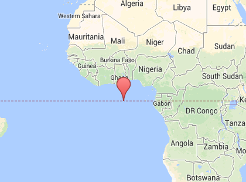
в точке (0, 0) появился маркер.
Нажмем на него
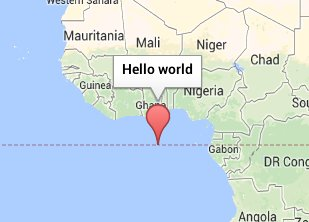
появился текст, который мы вводили.
Рассмотрим, какие возможности дает нам MarkerOptions.
alpha – прозрачность маркера, значение от 0 до 1
anchor – точка маркера, которая соответствует точке карты.
Рассмотрим маркер поближе
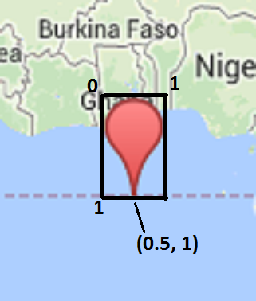
Сейчас на требуемое место на карте указывает его нижняя суженная часть. Если взять за единицу ширину и высоту маркера, то эту указательную точку маркера можно обозначить как (0.5, 1).
А т.к. мы можем в качестве маркера использовать свои иконки, вовсе необязательно, что у них указательная часть будет расположена также снизу по центру. Поэтому anchor дает возможность нам самим указать указательную точку маркера.
Например, указав (0.5, 0) мы получим маркер, который будет указывать своей верхней центральной частью.
draggable – маркер можно перетаскивать после установки
flat – настройка поведения маркера при повороте и наклоне карты. Если передать true, то маркер будет привязан к карте, т.е. будет вращаться и наклоняться вместе с картой. Если же false (по умолчанию) то маркер будет привязан к камере: при поворотах и наклонах карты он останется в том же положении.
icon – возможность кастомизации иконки маркера, на вход требует объект BitmapDescriptor, который в свою очередь может быть получен с помощью объекта BitmapDescriptorFactory.
Перепишем метод onClickTest:
public void onClickTest(View view) {
map.addMarker(new MarkerOptions().position(new LatLng(-10, -10)).icon(
BitmapDescriptorFactory
.defaultMarker(BitmapDescriptorFactory.HUE_GREEN)));
map.addMarker(new MarkerOptions().position(new LatLng(0, 0)).icon(
BitmapDescriptorFactory.defaultMarker()));
map.addMarker(new MarkerOptions().position(new LatLng(10, 10)).icon(
BitmapDescriptorFactory.fromResource(R.drawable.ic_launcher)));
}В точку (-10, -10) мы ставим маркер по умолчанию, который можно получить методом defaultMarker, но при этом мы меняем его цвет на зеленый.
В точку (0, 0) мы ставим маркер по умолчанию, который можно получить методом defaultMarker. Цвет не меняем.
В точку (10, 10) поставим маркер в виде стандартной Android иконки, используя метод fromResource и указав требуемый drawable-ресурс.
Запускаем, жмем Test и наблюдаем маркеры:
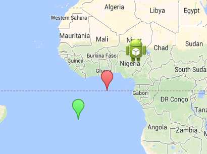
BitmapDescriptorFactory также имеет другие методы для получения иконки маркера:
- fromAsset, из папки assets
- fromBitmap, из Bitmap объекта
- fromFile, из файла внутреннего хранилища
- fromPath, из файла по указанному пути
Ну а для метода defaultMarker есть еще несколько готовых расцветок кроме зеленого, в документацие они все указаны.
rotation – поворот маркера (в градусах) по часовой относительно точки anchor.
snippet – дополнительный текст для инфоокна (которое отображается по нажатию на маркер)
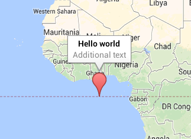
visible – видимость маркера
Метод addMarker при добавлении вернет вам объект Marker, для которого вы также позже сможете применять вышеописанные настройки с помощью методов set*.
Для отслеживания событий маркеров карта предоставляет нам пару слушателей.
OnMarkerClickListener (устанавливается методом setOnMarkerClickListener) имеет метод onMarkerClick, который дает нам Marker, на который было произведено нажатие.
OnMarkerDragListener (устанавливается методом setOnMarkerDragListener) имеет три метода для отслеживания перетаскивания маркера: onMarkerDragStart (перетаскивание начато), onMarkerDrag (перетаскивание в процессе) и onMarkerDragEnd (перетаскивание закончено).
Инфоокно
По нажатию на маркер появляется инфоокно с текстом. Показать это окно можно и программно, используя метод showInfoWindow объекта Marker.
Перепишем методы init и onClickTest:
private void init() {
marker = map.addMarker(new MarkerOptions()
.position(new LatLng(0, 0))
.title("Hello world")
.snippet("Additional text"));
}
public void onClickTest(View view) {
marker.showInfoWindow();
}Запустим приложение, появится маркер. Жмем Test и появляется инфоокно с текстами.
Метод hideInfoWindow скрывает инфоокно. Метод isInfoWindowShown подскажет, отображается ли для маркера инфоокно в данный момент.
Инфоокно можно кастомизировать. Перепишем метод init:
private void init() {
marker = map.addMarker(new MarkerOptions().position(new LatLng(0, 0))
.title("Hello world").snippet("Additional text"));
map.addMarker(new MarkerOptions().position(new LatLng(0, 20))
.title("Hello world1").snippet("Additional text1"));
map.setInfoWindowAdapter(new InfoWindowAdapter() {
@Override
public View getInfoWindow(Marker marker) {
if (marker.getId().equals(MainActivity.this.marker.getId())) {
TextView tv = new TextView(MainActivity.this);
tv.setText("Test getInfoWindow");
tv.setTextColor(Color.RED);
return tv;
} else
return null;
}
@Override
public View getInfoContents(Marker marker) {
TextView tv = new TextView(MainActivity.this);
tv.setText("Test getInfoContents");
return tv;
}
});
}
Мы добавляем два маркера и первый сохраняем в переменную marker. Далее вызываем метод setInfoWindowAdapter, в который создаем и передаем объект InfoWindowAdapter. Этот объект имеет два метода:
- getInfoWindow, замена всего инфоокна своим View (которое является результатом работы метода)
- getInfoContents, замена содержимого инфоокна своим View (которое является результатом работы метода)
Алгоритм такой. При вызове инфоокна система вызывает getInfoWindow и использует его View. Если getInfoWindow вернул null, то вызывается getInfoContents и используется его View. Если и здесь null, то создается стандартное инфоокно.
Мы в методе getInfoWindow по id проверяем, что это первый маркер, который мы создавали и для него создаем свое View (TextView с красным текстом Test getInfoWindow). Для всех других маркеров метод вернет null (а следовательно они пойдут в метод getInfoContents).
В методе getInfoContents мы создаем свое View (TextView с текстом Test getInfoContents) и используем его для всех маркеров.
Запускаем приложение, у нас появились два маркера. Жмем на первый:
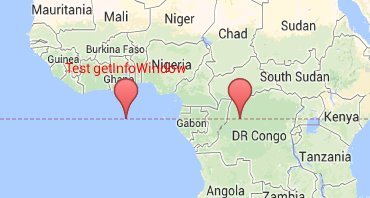
Видим, что инфоокно полностью заменилось нашим View из getInfoWindow.
Жмем на второй маркер.
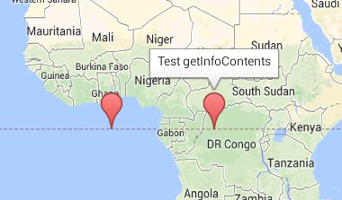
Здесь заменилось не все инфоокно, а только его содержимое. А рамка осталась.
Методом setOnInfoWindowClickListener мы можем повесить слушателя OnInfoWindowClickListener, который методом onInfoWindowClick оповестит нас о том, что произошло нажатие на инфоокно и даст нам Marker.
Фигуры
Карта дает нам возможность рисовать на ней простейшие фигуры: круги, линии, многоугольники.
Для этого есть три объекта:
- Polyline – набор точек, которые будут соединены линиями
- Polygon –набор точек, которые будут соединены линиями в т.ч. и от последней точки к первой
- Circle – круг, позволяет указать точку центра и радиус
Эти объекты допускают графические настройки такие как толщина и цвет линий, цвет заливки.
Давайте нарисуем три фигуры. Перепишем метод init:
private void init() {
PolylineOptions polylineOptions = new PolylineOptions()
.add(new LatLng(-5, -30)).add(new LatLng(-5, -20))
.add(new LatLng(5, -20)).add(new LatLng(5, -30))
.color(Color.MAGENTA).width(1);
map.addPolyline(polylineOptions);
PolygonOptions polygoneOptions = new PolygonOptions()
.add(new LatLng(-5, -10)).add(new LatLng(-5, 0))
.add(new LatLng(5, 0)).add(new LatLng(5, -10))
.strokeColor(Color.CYAN).strokeWidth(10).fillColor(Color.GREEN);
map.addPolygon(polygoneOptions);
CircleOptions circleOptions = new CircleOptions()
.center(new LatLng(0, 15)).radius(500000)
.fillColor(Color.YELLOW).strokeColor(Color.DKGRAY)
.strokeWidth(5);
map.addCircle(circleOptions);
}Первая фигура – Polyline. Для настройки используется объект PolylineOptions. Указываем точки, цвет(color) и толщину(width) линий. Настройки цвета заливки здесь нет, т.к. фигура может быть незамкнутой. Добавляем фигуру к карте методом addPolyline.
Далее Polygon. Для настройки используется объект PolygonOptions. Указываем точки, цвет(strokeColor) и толщину линий(strokeWidth), и цвет заливки(fillColor). Добавляем методом addPolygon.
И Circle. Настраивается объектом CircleOptions. Указываем точку центра, радиус (в метрах), цвет(strokeColor) и толщину линий(strokeWidth), и цвет заливки(fillColor). Добавляем методом addCircle.
Запускаем приложение и видим результат.
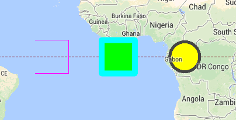
Как видите вторая фигура замкнутая, хотя я и указывал всего 4 точки. Линия от последней к первой рисуется автоматически.
Фигуры также имеют настройки:
visible - видимость
zIndex – который определяет, какая из двух фигур будет нарисована выше (поверх, ближе к нам) при их пересечении. Чем выше это значение, тем выше будет фигура.
geodesic (для Polyline и Polygon) – если true, то линии будут не прямыми, а соответствовать поверхности земли, т.е. немного закругленными. Это будет заметно на больших расстояниях.
Для PolygonOptions есть метод addHole, он рисует Polygon внутри Polygon, образуя дыру
Перепишем init:
private void init() {
List<LatLng> list = new ArrayList<LatLng>();
list.add(new LatLng(-4, -5));
list.add(new LatLng(0, -1));
list.add(new LatLng(4, -5));
list.add(new LatLng(0, -9));
PolygonOptions polygoneOptions = new PolygonOptions()
.add(new LatLng(-5, -10))
.add(new LatLng(-5, 0))
.add(new LatLng(5, 0))
.add(new LatLng(5, -10))
.addHole(list)
.strokeColor(Color.CYAN).
strokeWidth(1).
fillColor(Color.GREEN);
map.addPolygon(polygoneOptions);
}
Результат будет таков
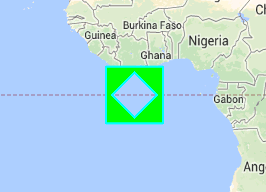
Методы добавления фигур к карте возвращают вам эти объекты, и вы можете в дальнейшем менять их настройки (set*) или удалить методом remove.
Overlay
Когда мы ставим маркер, он не меняет свой размер при зуме. А есть возможность наложить на карту изображение, которое будет так же, как и карта менять размер при приближении и отдалении.
Перепишем метод init:
private void init() {
GroundOverlayOptions newarkMap = new GroundOverlayOptions()
.image(BitmapDescriptorFactory.fromResource(R.drawable.ic_launcher))
.position(new LatLng(0, 0), 500000f, 500000f);
map.addGroundOverlay(newarkMap);
}Создаем и настраиваем объект GroundOverlayOptions, указывая нужное нам изображение (image) и его расположение (position), которое состоит из точки центра и размеров (ширина и высота) картинки в метрах.
Добавляем объект на карту методом addGroundOverlay.
Запускаем и видим результат.
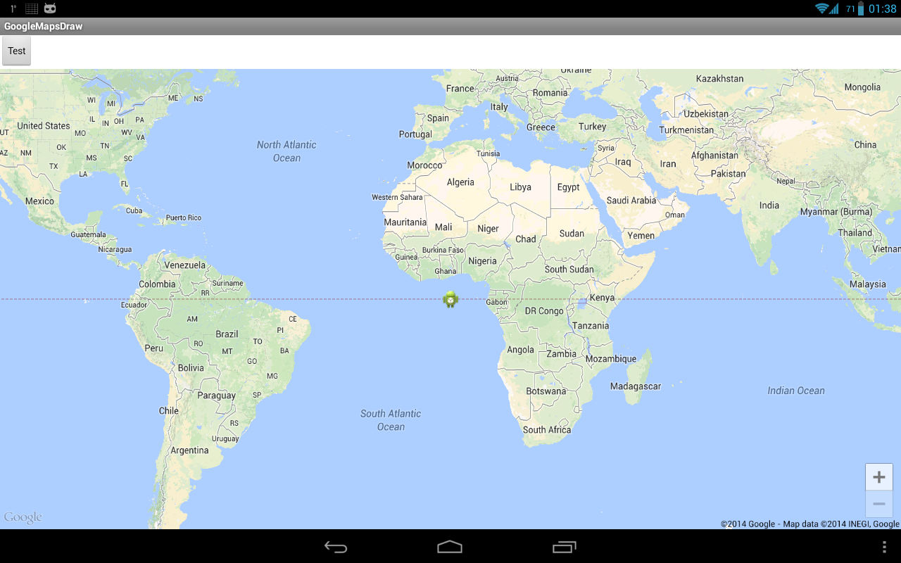
Приблизим и повернем.
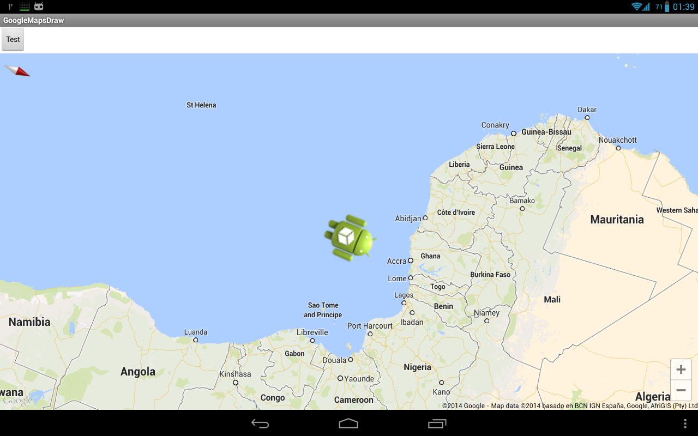
Видно, что картинка привязана к карте.
Расположение также можно указать методами:
position(LatLng location, float width) – аналогичен тому, что мы вызывали, но можно указать только ширину, а высота сама определится по размерам картинки
positionFromBounds (LatLngBounds bounds) – через объект LatLngBounds мы указываем юго-западную и северо-восточную точку на карте и картинка будет расположена в указанной области
Также этот объект поддерживает настройки:
transparency – уровень прозрачности
visible – видимость
zIndex – Z-уровень, кто кого выше при прорисовке
Метод добавления (addGroundOverlay) вернет вам объект GroundOverlay, который вы можете потом менять или удалять (remove).